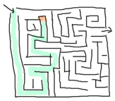

函数中的语法
模式匹配

我们现在有能力存储和编译我们的代码了，我们可以开始写更多功能的函数了。 到目前为止，我们已经写了一些简单但令人印象深刻的函数。下面我们将写一些更加有趣的东西。 我们第一个函数将是根据性别不同来到招呼的函数。 在绝大部分语言中，你会像下面这样写：
function greet(Gender,Name)
if Gender == male then
print("Hello, Mr. %s!", Name)
else if Gender == female then
print("Hello, Mrs. %s!", Name)
else
print("Hello, %s!", Name)
end
使用模式匹配，Erlang为你节省了大量的重复代码。同样的函数在Erlang中看起来是这样的：
greet(male, Name) ->
io:format("Hello, Mr. ~s!", [Name]);
greet(female, Name) ->
io:format("Hello, Mrs. ~s!", [Name]);
greet(_, Name) ->
io:format("Hello, ~s!", [Name]).
我承认，和其它语言相比Erlang的输出函数是多么的丑陋，但是这一点都不重要。 主要的不同是，我们用模式匹配同时定义了该使用哪个函数和哪个值被绑定。 其实我们没有必要先绑定的值，然后比较它们！所以我们不这么做：
function(Args)
if X then
Expression
else if Y then
Expression
else
Expression
我们这样写：
function(X) -> Expression; function(Y) -> Expression; function(_) -> Expression.
我们得到了同样的结果，但是这样更具有陈述性。(in order to get similar results, but in a much more declarative style.)
所有function声名中的每一个都被成为函数分句。
函数分句必须用分号（;）分开，当这些分句放在一起就是函数声明。
一个函数声明被认为是一个更大语句，并且函数声明中最后一个函数分句需要用句号结尾。
用符号决定工作流这很“有趣”，但是你很快就会适应这件事情。
(It's a "funny" use of tokens to determine workflow, but you'll get used to it.)
只要你希望如此，因为没有其它的方式了！
注意：
io:format是通过字符串中可替换的符号的帮助来完成字符串输出格式化。
用来代表可替换符号字符是波浪号（~）。
一些替换符号是内置的如换行符号~n。
绝大部分其它替换符号代表格式化数据的方式。
当函数调用io:format("~s!~n",["Hello"]).时，其中包含了一个接受字符串或比特字符串的~s替换符
和~n替换符，这个最终输出是"Hello!\n"。
另一个比较常用的替换符是~p，它可以非常好的输出Erlang的任何数据类型（为其添加适当的缩进等）。
我们将在稍后关于输入／输出相关的章节深入介绍io:format，
但是当下你可以尝试下这些，看它们会输出什么：
io:format("~s~n",[<<"Hello">>])，
io:format("~p~n",[<<"Hello">>])，io:format("~~~n")，
io:format("~f~n", [4.0]), io:format("~30f~n", [4.0])。
这个和很多其它的语言中printf非常像。
如果你没耐心等到介绍I/O的章节，那么阅读下在线文档去了解更多。
在函数中模式匹配可以比上面的例子更复杂更强大。
或许你还记得前面章节中，我们使用模式匹配获得列表头和尾。
让我们立刻就做！建立一个新的模块叫functions，
其中我们将写很多函数来探索模式匹配能给我们带来什么：
-module(functions). -compile(export_all). %% replace with -export() later, for God's sake!
The first function we'll write is head/1, acting exactly like erlang:hd/1 which takes a list as an argument and returns its first element. It'll be done with the help of the cons operator (|):
head([H|_]) -> H.
If you type functions:head([1,2,3,4]). in the shell (once the module is compiled), you can expect the value '1' to be given back to you. Consequently, to get the second element of a list you would create the function:
second([_,X|_]) -> X.
The list will just be deconstructed by Erlang in order to be pattern matched. Try it in the shell!
1> c(functions).
{ok, functions}
2> functions:head([1,2,3,4]).
1
3> functions:second([1,2,3,4]).
2
This could be repeated for lists as long as you want, although it would be impractical to do it up to thousands of values. This can be fixed by writing recursive functions, which we'll see how to do later on. For now, let's concentrate on more pattern matching. The concept of free and bound variables we discussed in Starting Out (for real) still holds true for functions: we can then compare and know if two parameters passed to a function are the same or not. For this, we'll create a function same/2 that takes two arguments and tells if they're identical:
same(X,X) ->
true;
same(_,_) ->
false.
And it's that simple. Before explaining how the function works, we'll go over the concept of bound and unbound variables again, just in case:

If this game of musical chairs was Erlang, you'd want to sit on the empty chair. Sitting on one already occupied wouldn't end well! Joking aside, unbound variables are variables without any values attached to them (like our empty chair). Binding a variable is simply attaching a value to an unbound variable. In the case of Erlang, when you want to assign a value to a variable that is already bound, an error occurs unless the new value is the same as the old one. Let's imagine our snake on the right: if another snake comes around, it won't really change much to the game. You'll just have more angry snakes. If a different animal comes to sit on the chair (a honey badger, for example), things will go bad. Same values for a bound variable are fine, different ones are a bad idea. You can go back to the subchapter about Invariable Variables if this concept is not clear to you.
Back to our code: what happens when you call same(a,a) is that the first X is seen as unbound: it automatically takes the value a. Then when Erlang goes over to the second argument, it sees X is already bound. It then compares it to the a passed as the second argument and looks to see if it matches. The pattern matching succeeds and the function returns true. If the two values aren't the same, this will fail and go to the second function clause, which doesn't care about its arguments (when you're the last to choose, you can't be picky!) and will instead return false. Note that this function can effectively take any kind of argument whatsoever! It works for any type of data, not just lists or single variables. As a rather advanced example, the following function prints a date, but only if it is formatted correctly:
valid_time({Date = {Y,M,D}, Time = {H,Min,S}}) ->
io:format("The Date tuple (~p) says today is: ~p/~p/~p,~n",[Date,Y,M,D]),
io:format("The time tuple (~p) indicates: ~p:~p:~p.~n", [Time,H,Min,S]);
valid_time(_) ->
io:format("Stop feeding me wrong data!~n").
Note that it is possible to use the = operator in the function head, allowing us to match both the content inside a tuple ({Y,M,D}) and the tuple as a whole (Date). The function can be tested the following way:
4> c(functions).
{ok, functions}
5> functions:valid_time({{2011,09,06},{09,04,43}}).
The Date tuple ({2011,9,6}) says today is: 2011/9/6,
The time tuple ({9,4,43}) indicates: 9:4:43.
ok
6> functions:valid_time({{2011,09,06},{09,04}}).
Stop feeding me wrong data!
ok
There is a problem though! This function could take anything for values, even text or atoms, as long as the tuples are of the form {{A,B,C}, {D,E,F}}. This denotes one of the limits of pattern matching: it can either specify really precise values such as a known number of atom, or abstract values such as the head|tail of a list, a tuple of N elements, or anything (_ and unbound variables), etc. To solve this problem, we use guards.
Guards, Guards!
")
Guards are additional clauses that can go in a function's head to make pattern matching more expressive. As mentioned above, pattern matching is somewhat limited as it cannot express things like a range of value or certain types of data. A concept we couldn't represent is counting: is this 12 years old basketball player too short to play with the pros? Is this distance too long to walk on your hands? Are you too old or too young to drive a car? You couldn't answer these with simple pattern matching. I mean, you could represent the driving question such as:
old_enough(0) -> false; old_enough(1) -> false; old_enough(2) -> false; ... old_enough(14) -> false; old_enough(15) -> false; old_enough(_) -> true.
But it would be incredibly impractical. You can do it if you want, but you'll be alone to work on your code forever. If you want to eventually make friends, start a new guards module so we can type in the "correct" solution to the driving question:
old_enough(X) when X >= 16 -> true; old_enough(_) -> false.
And you're done! As you can see, this is much shorter and cleaner. Note that a basic rule for guard expression is they must return true to succeed. The guard will fail if it returns false or if it throws an exception. Suppose we now forbid people who are over 104 years old to drive. Our valid ages for drivers is now from 16 years old up to 104 years old. We need to take care of that, but how? Let's just add a second guard clause:
right_age(X) when X >= 16, X =< 104 ->
true;
right_age(_) ->
false.
The comma (,) acts in a similar manner to the operator andalso and the semicolon (;) acts a bit like orelse (described in "Starting Out (for real)"). Both guard expressions need to succeed for the whole guard to pass. We could also represent the function the opposite way:
wrong_age(X) when X < 16; X > 104 ->
true;
wrong_age(_) ->
false.
And we get correct results from that too. Test it if you want (you should always test stuff!). In guard expressions, the semi-colon (;) acts like the orelse operator: if the first guard fails, it then tries the second, and then the next one, until either one guard succeeds or they all fail.
You can use a few more functions than comparisons and boolean evaluation in functions, including math operations (A*B/C >= 0) and functions about data types, such as is_integer/1, is_atom/1, etc. (We'll get back on them in the following chapter). One negative point about guards is that they will not accept user-defined functions because of side effects. Erlang is not a purely functional programming language (like Haskell is) because it relies on side effects a lot: you can do I/O, send messages between actors or throw errors as you want and when you want. There is no trivial way to determine if a function you would use in a guard would or wouldn't print text or catch important errors every time it is tested over many function clauses. So instead, Erlang just doesn't trust you (and it may be right to do so!)
That being said, you should be good enough to understand the basic syntax of guards to understand them when you encounter them.
Note: I've compared , and ; in guards to the operators andalso and orelse. They're not exactly the same, though. The former pair will catch exceptions as they happen while the latter won't. What this means is that if there is an error thrown in the first part of the guard X >= N; N >= 0, the second part can still be evaluated and the guard might succeed; if an error was thrown in the first part of X >= N orelse N >= 0, the second part will also be skipped and the whole guard will fail.
However (there is always a 'however'), only andalso and orelse can be nested inside guards. This means (A orelse B) andalso C is a valid guard, while (A; B), C is not. Given their different use, the best strategy is often to mix them as necessary.
What the If!?
Ifs act like guards and share guards' syntax, but outside of a function clause's head. In fact, the if clauses are called Guard Patterns. Erlang's ifs are different from the ifs you'll ever encounter in most other languages; compared to them they're weird creatures that might have been more accepted had they had a different name. When entering Erlang's country, you should leave all you know about ifs at the door. Take a seat because we're going for a ride.
To see how similar to guards the if expression is, look at the following examples:
-module(what_the_if).
-export([heh_fine/0]).
heh_fine() ->
if 1 =:= 1 ->
works
end,
if 1 =:= 2; 1 =:= 1 ->
works
end,
if 1 =:= 2, 1 =:= 1 ->
fails
end.
Save this as what_the_if.erl and let's try it:
1> c(what_the_if).
./what_the_if.erl:12: Warning: no clause will ever match
./what_the_if.erl:12: Warning: the guard for this clause evaluates to 'false'
{ok,what_the_if}
2> what_the_if:heh_fine().
** exception error: no true branch found when evaluating an if expression
in function what_the_if:heh_fine/0

Uh oh! the compiler is warning us that no clause from the if on line 12 (1 =:= 2, 1 =:= 1) will ever match because its only guard evaluates to false. Remember, in Erlang, everything has to return something, and if expressions are no exception to the rule. As such, when Erlang can't find a way to have a guard succeed, it will crash: it cannot not return something. As such, we need to add a catch-all branch that will always succeed no matter what. In most languages, this would be called an 'else'. In Erlang, we use 'true' (this explains why the VM has thrown "no true branch found" when it got mad):
oh_god(N) ->
if N =:= 2 -> might_succeed;
true -> always_does %% this is Erlang's if's 'else!'
end.
And now if we test this new function (the old one will keep spitting warnings, ignore them or take them as a reminder of what not to do):
3> c(what_the_if).
./what_the_if.erl:12: Warning: no clause will ever match
./what_the_if.erl:12: Warning: the guard for this clause evaluates to 'false'
{ok,what_the_if}
4> what_the_if:oh_god(2).
might_succeed
5> what_the_if:oh_god(3).
always_does
Here's another function showing how to use many guards in an if expression. The function also illustrates how any expression must return something: Talk has the result of the if expression bound to it, and is then concatenated in a string, inside a tuple. When reading the code, it's easy to see how the lack of a true branch would mess things up, considering Erlang has no such thing as a null value (ie.: lisp's nil, C's NULL, Python's None, etc):
%% note, this one would be better as a pattern match in function heads!
%% I'm doing it this way for the sake of the example.
help_me(Animal) ->
Talk = if Animal == cat -> "meow";
Animal == beef -> "mooo";
Animal == dog -> "bark";
Animal == tree -> "bark";
true -> "fgdadfgna"
end,
{Animal, "says " ++ Talk ++ "!"}.
And now we try it:
6> c(what_the_if).
./what_the_if.erl:12: Warning: no clause will ever match
./what_the_if.erl:12: Warning: the guard for this clause evaluates to 'false'
{ok,what_the_if}
7> what_the_if:help_me(dog).
{dog,"says bark!"}
8> what_the_if:help_me("it hurts!").
{"it hurts!","says fgdadfgna!"}
You might be one of the many Erlang programmers wondering why 'true' was taken over 'else' as an atom to control flow; after all, it's much more familiar. Richard O'Keefe gave the following answer on the Erlang mailing lists. I'm quoting it directly because I couldn't have put it better:
It may be more FAMILIAR, but that doesn't mean 'else' is a good thing. I know that writing '; true ->' is a very easy way to get 'else' in Erlang, but we have a couple of decades of psychology-of-programming results to show that it's a bad idea. I have started to replace:
by if X > Y -> a() if X > Y -> a() ; true -> b() ; X =< Y -> b() end end if X > Y -> a() if X > Y -> a() ; X < Y -> b() ; X < Y -> b() ; true -> c() ; X ==Y -> c() end endwhich I find mildly annoying when _writing_ the code but enormously helpful when _reading_ it.
'Else' or 'true' branches should be "avoided" altogether: ifs are usually easier to read when you cover all logical ends rather than relying on a "catch all" clause.
As mentioned before, there are only a limited set of functions that can be used in guard expressions (we'll see more of them in Types (or lack thereof)). This is where the real conditional powers of Erlang must be conjured. I present to you: the case expression!
Note: All this horror expressed by the function names in what_the_if.erl is expressed in regards to the if language construct when seen from the perspective of any other languages' if. In Erlang's context, it turns out to be a perfectly logical construct with a confusing name.
In Case ... of
If the if expression is like a guard, a case ... of expression is like the whole function head: you can have the complex pattern matching you can use with each argument, and you can have guards on top of it!
As you're probably getting pretty familiar with the syntax, we won't need too many examples. For this one, we'll write the append function for sets (a collection of unique values) that we will represent as an unordered list. This is possibly the worst implementation possible in terms of efficiency, but what we want here is the syntax:
insert(X,[]) ->
[X];
insert(X,Set) ->
case lists:member(X,Set) of
true -> Set;
false -> [X|Set]
end.
If we send in an empty set (list) and a term X to be added, it returns us a list containing only X. Otherwise, the function lists:member/2 checks whether an element is part of a list and returns true if it is, false if it is not. In the case we already had the element X in the set, we do not need to modify the list. Otherwise, we add X as the list's first element.
In this case, the pattern matching was really simple. It can get more complex (you can compare your code with mine):
beach(Temperature) ->
case Temperature of
{celsius, N} when N >= 20, N =< 45 ->
'favorable';
{kelvin, N} when N >= 293, N =< 318 ->
'scientifically favorable';
{fahrenheit, N} when N >= 68, N =< 113 ->
'favorable in the US';
_ ->
'avoid beach'
end.
Here, the answer of "is it the right time to go to the beach" is given in 3 different temperature systems: Celsius, Kelvins and Fahrenheit degrees. Pattern matching and guards are combined in order to return an answer satisfying all uses. As pointed out earlier, case ... of expressions are pretty much the same thing as a bunch of function heads with guards. In fact we could have written our code the following way:
beachf({celsius, N}) when N >= 20, N =< 45 ->
'favorable';
...
beachf(_) ->
'avoid beach'.
This raises the question: when should we use if, case ... of or functions to do conditional expressions?

Which to use?
Which to use is rather hard to answer. The difference between function calls and case ... of are very minimal: in fact, they are represented the same way at a lower level, and using one or the other effectively has the same cost in terms of performance. One difference between both is when more than one argument needs to be evaluated: function(A,B) -> ... end. can have guards and values to match against A and B, but a case expression would need to be formulated a bit like:
case {A,B} of
Pattern Guards -> ...
end.
This form is rarely seen and might surprise the reader a bit. In similar situations, using a function call might be more appropriate. On the other hand the insert/2 function we had written earlier is arguably cleaner the way it is rather than having an immediate function call to track down on a simple true or false clause.
Then the other question is why would you ever use if, given cases and functions are flexible enough to even encompass if through guards? The rationale behind if is quite simple: it was added to the language as a short way to have guards without needing to write the whole pattern matching part when it wasn't needed.
Of course, all of this is more about personal preferences and what you may encounter more often. There is no good solid answer. The whole topic is still debated by the Erlang community from time to time. Nobody's going to go try to beat you up because of what you've chosen, as long as it is easy to understand. As Ward Cunningham once put it, "Clean code is when you look at a routine and it's pretty much what you expected."